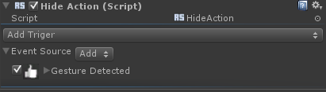
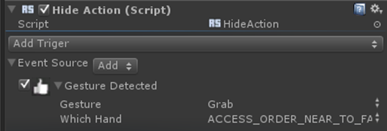
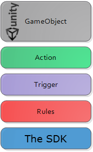

The SDK Unity Toolkit consists of the following main components:
Actions
Actions are MonoBehavior scripts. Each action defines a certain behavior on a game object. For example, the Hide action disables the Mesh Renderer.

Figure 81: The Hide Action
In Figure 81, the Event Source is the trigger associated with the Hide action. Each action has a set of triggers. The action is executed whenever one of its triggers is fired.
 See Actions for the detailed description of available actions ready to be used in the toolkit.
See Actions for the detailed description of available actions ready to be used in the toolkit.
Triggers and Rules
A Trigger defines a family of interactions that can be implemented in several ways. For example, the Tracking Trigger defines all interactions that track a certain object in the real world such as a hand or a face. Each interaction is implemented as a Rule. Thus each trigger has its own set of rules.
A trigger also contains a set of properties that can be accessed by the action. These properties are information that relates to the interaction. For instance, the Tracking Trigger contains the position of the tracked object and its orientation. The action can access these properties and move the game object as needed.
Event Source is the trigger for general events from the SDK. In Figure 82, the game object has one rule attached, which is the Gesture Detected rule.
Figure 82: The Hide Action With Gesture Detected Attached
A rule implements a defined interaction. For example, the Hand Detected rule uses the hand tracking module in the SDK to fire an event whenever a hand is detected. This specific rule belongs to the Event Trigger, which indicates that an event has occurred.
In Figure 83, Gesture Detected is a rule for the gesture detected event. You can choose which gesture to monitor as well as which hand in the rule's parameters.

Figure 83: The Hide Action With Gesture Detected Parameters
This design (see Figure 84) provides flexibilities in the Unity game development. The triggers act as a buffer between the Unity game object manipulations (Actions) and the SDK implementation (Rules). You can build many actions without the need to write code if the actions can be based on available triggers and rules provided in the toolkit.

Figure 84: Unity Toolkit Components